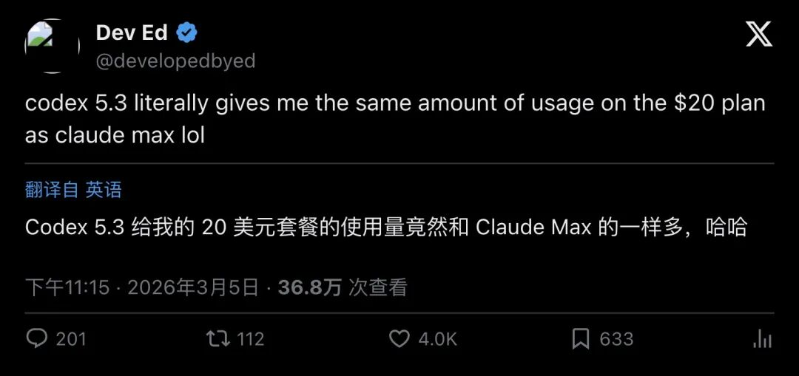
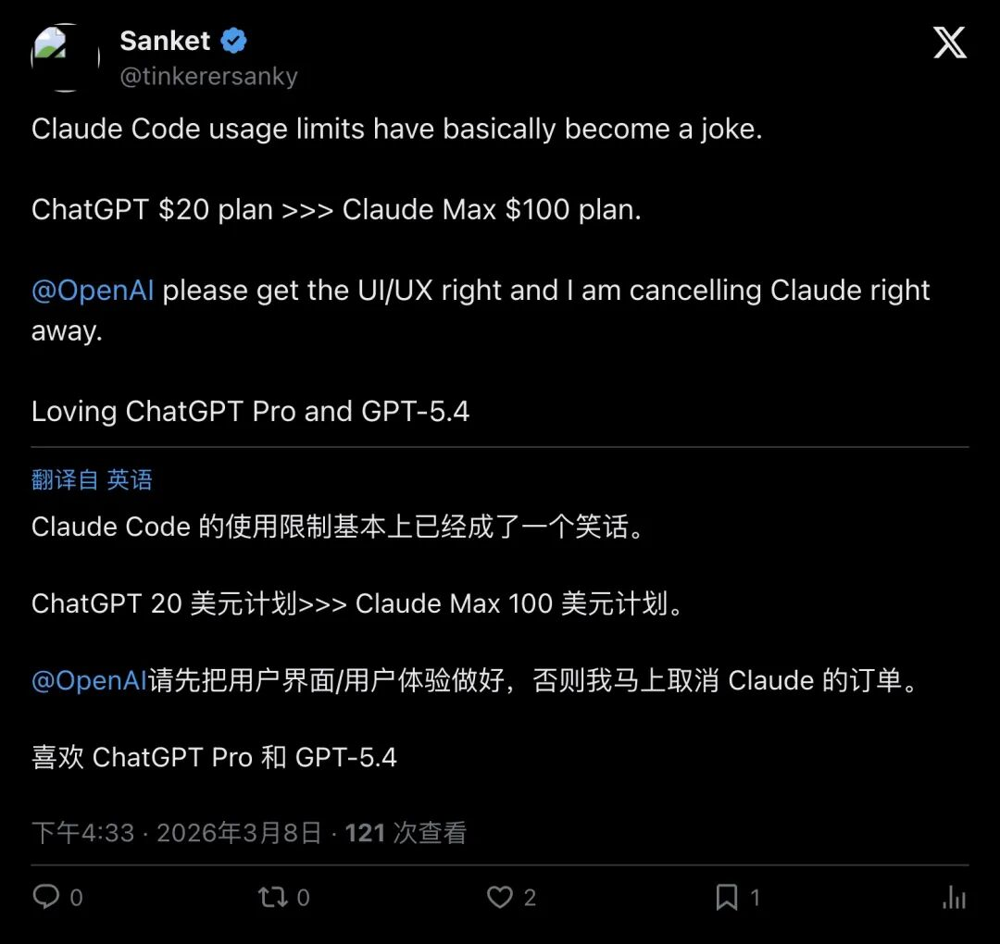
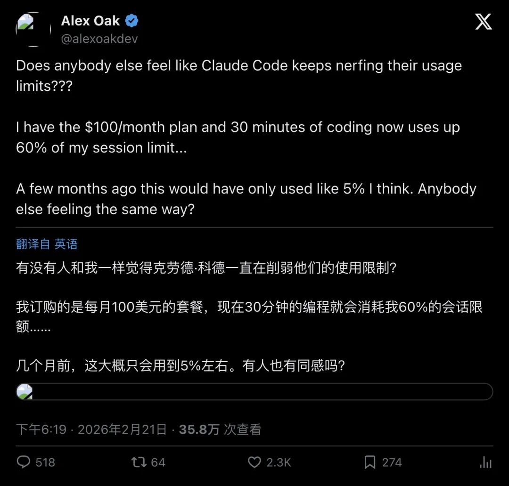

同样 20 美元，Codex 5.3 用量≈Claude Max？订阅党吵翻了
一条推文点燃了 AI 订阅圈的战火：开发者 Dev Ed 直言「Codex 5.3 在 20 刀套餐上的用量，和 Claude Max 差不多」，4000+ 点赞，36 万浏览。评论区瞬间变成斗兽场——有人说 Codex 一周用不完，有人说 Claude 两下就撞墙；也有人反手揭底：20 刀的 Codex 其实在「慢管道」上跑。这场争吵的本质不是谁更聪明，而是：同样的钱，到底能买到多少「可持续的工作量」？限额黑箱、速度分层、拼车账号池……订阅战争已经从模型能力卷到了用量机制。
引爆：一条推文，两派开战
2026 年 3 月初，开发者 Dev Ed 在 X 上发了一条看似平淡的对比：
"codex 5.3 literally gives me the same amount of usage on the $20 plan as claude max lol"

▲ Dev Ed：Codex 5.3 在 20 刀套餐的用量≈Claude Max（4000+ 赞，36 万浏览）
这句话像一颗手榴弹扔进了订阅党群体。评论区最高赞回复直接开火：
「用 20 刀的 Codex，我能撑一整周都不撞线；用 20 刀的 Claude，我直接被煮熟（im cooked）。」
另一边，开发者 Sanket 更狠，直接宣布取消 Claude 订阅：
"Claude Code 的用量限制已经变成笑话了。ChatGPT 20 刀套餐 >>> Claude Max 100 刀套餐。"

▲ Sanket：Claude 限额成笑话，ChatGPT $20 > Claude Max $100
但事情没这么简单。
先把账算清楚：Claude Max 根本不是 20 美元
这场争吵的第一个雷区，就是比较口径。
去 Anthropic 官网看 Claude 定价，你会发现：
- Claude Pro
：$20/月 - Claude Max
：从 $100/月起，可选 5x 或 20x 用量（相对 Pro）
也就是说，Claude Max 并不是 20 美元。
那为什么社媒上会出现「20 刀 Codex ≈ Claude Max」的说法？因为口语化传播里，「Max 20x」常被简称成「Max 20」，容易被误读成「Max 20 美元」。
真正合理的对比应该是： 1.Codex（ChatGPT Plus $20）vsClaude（Pro $20）——最常见、最公平 2.Codex（Plus $20）vsClaude Max（$100/20x）——情绪最强烈、最「吊打式」，但价格根本不对等
Dev Ed 那条推文之所以炸裂，正是因为它暗示：20 刀的 Codex，体感接近 100 刀起的 Claude Max。
这才是真正让人震惊的地方。
OpenAI 的限额表：为什么有人一周用不完，有人 30 分钟撞墙？
OpenAI 官方给出了 Codex 的用量限额表，但这张表反而制造了更多困惑：
ChatGPT Plus（$20/月）的 Codex 限额：
- 本地消息（Local Messages）/ 5 小时
：45–225 条 - 云任务（Cloud Tasks）/ 5 小时
：10–60 次 - 代码审查（Code Reviews）/ 周
：10–25 次
ChatGPT Pro（$200/月）的 Codex 限额：
- 本地消息 / 5 小时
：300–1500 条 - 云任务 / 5 小时
：50–400 次 - 代码审查 / 周
：100–250 次
看到这些「区间」了吗？45–225、10–60——为什么不是一个固定数字？
官方解释很直白：消耗取决于任务大小、上下文长度、模型选择、本地 vs 云端。
换句话说：
你让它改个函数名，可能只消耗 1 单位 你让它重构 5 万行项目 + 跑测试 + 修 CI，可能一次就烧掉 20 单位
这就解释了为什么同一个 20 刀套餐，会出现两极体验：
- 写小脚本的人
：「我一周都用不完」 - 跑大仓库的人
：「我 30 分钟就撞墙了」
更关键的是，OpenAI 还埋了几个「机制陷阱」：
1.5 小时窗口：第一条 prompt 触发计时，本地消息和云任务共用这个窗口 2.代码审查独立限额：Code Review 功能有单独的周限额，Reddit 上有人说「这个最容易撞线」 3.可以买 credits 续命：撞线后不一定要升级，可以单独购买 ChatGPT credits 继续用
还有一个「限时福利」：官方写了「限时 2x Codex rate limits」——也就是说，现在的「能用」体感，可能只是促销窗口，并非长期状态。
Claude 的黑箱：100 刀档也有人喊「被砍了」
相比 OpenAI 的「区间透明」，Claude 的限额机制更像一个黑箱。
官网只写了「usage limits apply」，具体细则不在同页展示。这会导致用户更容易用「体感」判断——而体感，最容易被情绪放大。
开发者 Alex Oak 的抱怨就是典型案例：
"我订的是 100 刀/月的 Claude 套餐，用了 30 分钟就烧掉 60% 的 session limit。几个月前同样的用法，只会消耗 5% 左右。"

▲ Alex Oak：Claude $100 档「30 分钟 60%」，怀疑被暗改
他直接质问 Anthropic：「你们是不是悄悄改了限额？」
类似的抱怨还有很多。开发者 Mervin 订了 Claude Max 20x（$100 起），结果「大概 1 小时就撞墙了」，也在推文里追问：「你们最近改了什么吗？」
但也有人给出完全相反的体验。开发者 Robin 用 Claude Max 20x 用了 3.5 天，兴奋地发推：
「已经回本了，这太疯狂了（INSANE）！」
同一套餐，有人 1 小时撞墙，有人 3.5 天回本——这种两极分化，正是「限额不透明」带来的副作用。
Codex 也不完美：20 刀在「慢管道」上跑？
就在「Codex 吊打 Claude」的声浪最高时，另一条推文泼了冷水。
开发者 Peter Steinberger 直言：
"提醒一下：20 刀套餐会让你进入慢管道（slow pipeline），Codex 会变得难以忍受（unbearable）。"
这条推文引发了 1100+ 点赞和 129 条回复，线程里吵成一团：
- 反对派
：「我用 20 刀套餐，叫它'难以忍受'太夸张了」 - 支持派
：「我从内部消息知道的（I know from the source）」 - 中立派
：「也许我不知道'快'是什么样子，但我觉得还行」
还有人补充：「Codex 5.3 确实比 5.1 快了，但仍然比 Pro 慢。」
这揭示了另一个维度的「订阅分层」：
- 20 刀买的是「能用」
- 200 刀买的是「更快的产出节奏」
速度差异会直接影响工作流。如果你需要高频反馈、并行跑多个任务、快速迭代，慢管道可能真的会让你抓狂。
但也有人给出了务实的评价：
「同样的钱在 Claude 上几乎只能跑个 hello world，Codex 至少还能干活。」
真正的分水岭：你买的不是智商，是「可持续的产出时间」
这场争吵的核心，不是「谁更聪明」，而是：同样的钱，能买到多少「可持续的工作量」。
开发者 Jarrod Watts 的长推文，把这个问题讲得很透：
"Opus 4.5 非常擅长把你带到 80%，但最后 20%（关键部分），Codex 是更好的模型。"
"Codex 一开始感觉很慢，但它会一次做对，长期来看反而节省时间。"
"Claude 就像纯粹的可卡因（pure crack），Codex 则远没那么刺激多巴胺。"
他的比喻很形象：
「Codex 很临床（clinical）……你不会想在派对上跟他聊天，但你会信任他帮你报税。」
这种「爽感 vs 可交付」的对比，正在成为订阅党的新共识：
- Claude（或 Opus）
：更适合起步、规划、交互，给你多巴胺 - Codex
：更适合审查、收尾、找 bug，给你交付物
有人在 Reddit 上总结得很实在：
「先订 20 刀 Plus，撞线就买 credits 续命；当 Plus + credits 的成本超过 Pro，再考虑下月升级。」
中国式打法：拼车、账号池、8 块钱撑一个月
在中文圈，这场订阅战争还催生了另一种玩法。
蓝点网在 X 上发了一条「省钱攻略」：
"某鱼拼车 ChatGPT Team，配合 OpenClaw，每月仅需 8 元。Team 版 Codex 配额比免费版高很多，每个人配额独立，高强度可以多拼几个账号轮流使用。"
这条推文的收藏数（564）比点赞数（370）还高——说明很多人在默默保存「教程」。
但蓝点网也提醒了风险：
卖家号被封，你的聊天记录可能也没了 不建议用拼车号聊天，要备份
这揭示了订阅战争的另一个维度：谁更适合被拆分成账号池、被中转、被拼车。
真正的订阅成本 = 月费 + 学习成本 + 配置成本 + 风险成本（封号/数据丢失/合规）。
订阅党的最优解：不是二选一，是组合拳
这场争吵最终指向一个现实：没有完美的 20 刀订阅。
Codex：限额更耐用，但速度分层、需要自己配 embeddings Claude：交互更爽，但限额黑箱、容易撞墙
Reddit 和 X 上都出现了一种「组合拳」思路：
1.先 20 刀入门，看自己的工作流更适合哪个 2.撞线就买 credits 或加一个账号，而不是立刻升级 3.让 Claude 做规划/交互，让 Codex 做审查/收尾（或反过来） 4.当成本超过更高档，再考虑升级
还有人提到：
- CLI 模式更省额度
，Cloud 功能更烧 - 切到 mini 模型
可以让限额延长 4 倍左右 - 并行请求
是最快撞线的方式
最讽刺的是，OpenAI 官方写了「限时 2x rate limits」——这意味着现在的「Codex 更能用」体感，可能只是营销抢份额的促销窗口。
当促销结束，这场争吵可能又会反转。
真正的战争才刚开始
订阅制 AI 的战争，已经从「谁更聪明」卷到了「谁更耐用」。
限额机制、速度分层、透明度、可持续性——这些过去不被重视的「体验细节」，正在成为用户选择的关键。
Dev Ed 那条推文之所以炸裂，不是因为他说 Codex 更强，而是因为他戳破了一个事实：
你以为你在买一个会写代码的 AI，但你真正买的，是「可持续的产出时间」。
而这个时间，取决于限额、速度、透明度、以及你愿意为「不撞墙」付出多少钱。
— END —